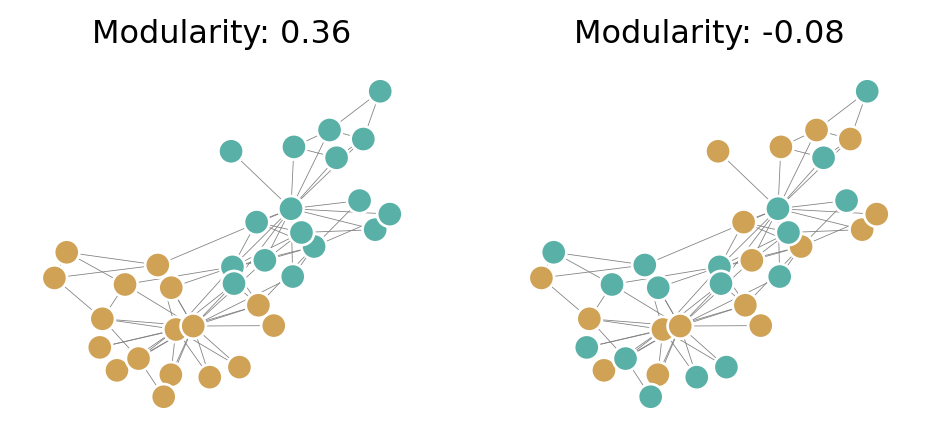

Show code
import numpy as np
import networkx as nx
from matplotlib import pyplot as plt
def unweight(G):
for source, target in G.edges():
G[source][target]['weight'] = 1
return GOpen the live notebook in Google Colab here.
The tendency of individuals to associate with others whom they perceive to be like themselves is called homophily. Homophily is observed in many network settings, especially in social networks. Think about the people you spend your time with.
If you answered “yes” to any of these questions, you are likely observing the effects of homophily in your social network.
Informally speaking, a network is said to be assortative if a significant fraction of edges are between nodes of the same “type” and disassortative if a significant fraction of edges are between nodes of different “types.” If we divide the notes of a network into types (demographics, interest, views, etc), then we can ask ourselves about the prevalence of connections between nodes of the same type and nodes of different types.
From a vocabulary perspective, “homophily” usually refers to a process by which nodes tend to form connections to each other, while “assortative” refers to the static structure of an observed network. So, assortativity is often the result of homophily, although it can also be observed for other reasons.
Let’s make the idea of assortativity more precise. Suppose we have a network in which nodes are classified into a finite set of descriptive values. We’ll start with a conceptual definition and then turn that into math.
This definition gives us some inspiration on a possible strategy on how to assortativity. Assortativity is defined by a comparison to a counterfactual version (or versions) of the network that has the same degree distribution but edges are positioned at random:
\[ \begin{aligned} \text{Assortativity} &= \left(\begin{matrix} \text{fraction of same-type } \\ \text{edges in data} \end{matrix}\right) - \left(\begin{matrix} \text{fraction of same-type } \\ \text{edges expected at random} \end{matrix}\right) \end{aligned} \]
Let’s set up some notation that allow us to compute each of these two terms. Let \(Z\) be the set of possible group labels. For example, if there are \(g\) groups, then we have \(z_i \in \{z_1, \dots, z_g\}\) representing the type of node \(i\). To count the total number of same-type edges, we’d like a way to encode 1 every time an edge is between same-type edges. A convenient notational tool for this is the Kronecker delta \(\delta_{ij}\).
We now have nice mathematical notation to count the total number of same-type edges that are present in our network: \[ \left(\begin{matrix} \text{fraction of same-type } \\ \text{edges in data} \end{matrix}\right) = \frac{1}{2} \sum_i \sum_j A_{ij}\delta_{z_iz_j} \,. \tag{11.1}\]
Next we need to calculate the expected number of same-type edges. Let’s suppose that for this comparison we are keeping some important structural properties of our network the same: we want to make sure that the number of edges \(m\) is preserved, as well as the degrees \(k_i\) of each of the nodes.
Let’s pick nodes \(i\) and \(j\). What is the expected number of edges between them, under this heuristic model? Let’s follow configuration-model type thinking and consider each edge of the network to be composed of two half-edges or stubs. We know that there are \(k_i\) stubs attached to node \(i\) and \(k_j\) stubs attached to node \(j\), and \(2m\) stubs in the entire network (2 for each edge). Let’s take on of the \(k_i\) stubs attached to node \(i\). There are \(2m-1\) stubs remaining, of which \(k_j\) are attached to node \(j\). So, working at random, the probability that that specific stub connects to a stub on node \(j\) is \(k_j/(2m-1) \approx k_j / 2m\). We have a total of \(k_i\) opportunities to connect in this way, so the expected number of edges between \(i\) and \(j\) is approximately \(k_i k_j / 2m\). With this, we can calculate the expected number of edges between node \(i\) and node \(j\) is approximately \(\frac{k_ik_j}{2m}\). Summing over all possible \(i,j\) combinations and again using our Kronecker delta to only count same type edges gives us an approximation for the expected number of edges between same-type node pairs \[ \left(\begin{matrix} \text{fraction of same-type } \\ \text{edges expected at random} \end{matrix}\right) = \frac{1}{2} \sum_i \sum_j \frac{k_ik_j}{2m}\delta_{z_iz_j} \,. \tag{11.2}\] We can combine Equation 11.1 and Equation 11.2 to get a count of the difference between the actual and expected number of same-type edges: \[ \begin{align} \frac{1}{2} \sum_i \sum_j A_{ij}\delta_{z_iz_j} - \frac{1}{2} \sum_i \sum_j \frac{k_ik_j}{2m}\delta_{z_iz_j} \\ = \frac{1}{2}\sum_i \sum_j \left( A_{ij} -\frac{k_ik_j}{2m}\right)\delta_{z_iz_j} \,. \end{align} \] This gives us the difference between the actual and expected number of same-type edges. We usually normalize by dividing by the total number of edges in the graph. This gives us our final formula for measuring assortativity, which is usually called the modularity.
In some sense modularity measures the extent to which same-type nodes are connected in a network. Our expression Equation 11.3 highlights two things:
Let’s write an implementation of the modularity according to Equation 11.3. To do this, we’ll use an array broadcasting trick. From a vector \(\mathbf{z}\) of node labels, I can create a matrix \(\Delta\) such that \(\Delta_{ij} = \delta_{z_i, z_j}\) like this:
import numpy as np
import networkx as nx
from matplotlib import pyplot as plt
def unweight(G):
for source, target in G.edges():
G[source][target]['weight'] = 1
return Gz = np.array([0, 1, 0])
1*(z[:, None] == z[None, :])array([[1, 0, 1],
[0, 1, 0],
[1, 0, 1]])We can use this trick to construct the individual terms of the modularity as entries in a matrix, which we’ll then sum over to get the modularity as a number:
def modularity(G, z):
# form the matrices we need
A = nx.to_numpy_array(G)
k = A.sum(axis = 1)
m = G.number_of_edges()
# computes a matrix whose ith entry is delta_{z_i, z_j}
Delta = z[:, None] == z[None, :]
return 1/(2*m)*((A - np.outer(k, k) / (2 * m))*Delta).sum()Let’s test this function on the Zachary Karate Club network, which famously fissioned into two groups. First, we’ll get the graph and converted it unweighted form:
G = nx.karate_club_graph()
G = unweight(G)We can extract the labels of the two fissioned clubs using nx.get_node_attributes:
nx.get_node_attributes(G, 'club')
z = np.array([G.nodes[i]['club'] for i in G.nodes])Before we compute the modularity with respect to the label vector z, let’s also compare to a random label vector.
z_random = z.copy()
np.random.shuffle(z_random)Now we can compare the modularity of the graph under the random labels and the true labels.
Q = modularity(G, z)
Q_random = modularity(G, z_random)We can see that the higher modularity corresponds to a visually more intuitive separation of the graph into groups:
z_binary = z == "Mr. Hi"
z_binary_random = z_random == "Mr. Hi"
fig, ax = plt.subplots(1, 2, figsize = (6, 2.5))
pos = nx.spring_layout(G)
nx.draw(G, pos, ax = ax[0], node_color = z_binary, cmap = plt.cm.BrBG, vmin = -0.5, vmax = 1.5, edgecolors = 'white', edge_color = "grey", node_size = 90, width = 0.3)
ax[0].set_title(f"Modularity: {Q:.2f}")
nx.draw(G, pos, ax = ax[1], node_color = z_binary_random, cmap = plt.cm.BrBG, vmin = -0.5, vmax = 1.5, edgecolors = 'white', edge_color = "grey", node_size = 90, width = 0.3)
mod = ax[1].set_title(f"Modularity: {Q_random:.2f}")
We’ve developed the modularity from the idea of comparing the observed proportion of within-cluster edges to the expected proportion of within-cluster edges under a random graph model. This is useful, but let’s also take another point of view that highlights the “balancing act” that modularity expresses.
Let \(Z\) be the set of possible group labels. For example, \(Z = \{z_1,z_2,\ldots,z_g \}\) for some \(g\). For each label \(\ell \in Z\), define \[ e_\ell \triangleq \frac{1}{2m}\sum_{i,j\in V}A_{ij}\delta_{z_i, \ell}\delta_{z_j, \ell} \quad \text{and} \quad f_\ell \triangleq \frac{1}{2m}\sum_{i\in V} k_i \delta_{z_i, \ell}\;. \]
Intuitively, \(e_\ell\) counts the fraction of total edges that pass between two nodes in cluster \(\ell\), while \(f_\ell\) counts the fraction of all edges that are attached to nodes in cluster \(\ell\). We can think of \(f_\ell\) as a measure of the weighted size of the cluster; a cluster is “large” according to \(f_\ell\) when it has many nodes of high degree.
We’re going to find copies of these expressions in \(Q\). The “trick” is to note that we can do fancy things with the \(\delta\)-function, like this: \[ \delta_{z_i, z_j} = \sum_{\ell \in Z}\delta_{z_i,\ell}\delta_{z_j,\ell} \tag{11.4}\] Inserting Equation 11.4 and doing some algebra, we find \[ \begin{aligned} Q(G, \mathbf{z}) &= \frac{1}{2m}\sum_{i,j \in V}\left[A_{ij} - \frac{k_ik_j}{2m}\right]\delta_{z_i, z_j} \\ &= \frac{1}{2m}\sum_{i,j \in V}\left[A_{ij} - \frac{k_ik_j}{2m}\right]\sum_{\ell \in Z}\delta_{z_i,\ell}\delta_{z_j,\ell} \\ &= \frac{1}{2m}\sum_{\ell \in Z}\sum_{i,j \in V}\left[A_{ij}\delta_{z_i,\ell}\delta_{z_j,\ell} - \frac{k_ik_j}{2m}\delta_{z_i,\ell}\delta_{z_j,\ell}\right] \\ &= \sum_{\ell \in Z}\left[e_\ell - \frac{1}{(2m)^2}\sum_{i,j \in V}k_i\delta_{z_i,\ell}k_j\delta_{z_j,\ell}\right] \\ &= \sum_{\ell \in Z}\left[e_\ell - \frac{1}{(2m)^2}\left(\sum_{i \in V}k_i\delta_{z_i,\ell}\right)\left(\sum_{j \in V}k_j\delta_{z_j,\ell}\right)\right] \\ &= \sum_{\ell \in Z}\left[e_\ell - f_\ell^2\right]\;. \\ \end{aligned} \tag{11.5}\] This compact expression for the modularity helps us interpret the expression in a new way. Remember that we consider the network to be assortative when \(Q(G, \mathbf{z})\) is large, i.e., when \(e_\ell\) is large and \(f_\ell^2\) is small for each \(\ell\). What does it mean here?
Well, \(\sum_{\ell \in Z} e_\ell\) is the fraction of all edges that join nodes in the same group. One extreme case is when every node is in the same group: Then, \(\sum_{\ell \in Z} e_\ell = 1\). The term \(f_\ell\) tell us the fraction of ends of edges attached to nodes of type \(\ell\). Because of this, \(\sum_{\ell}f_\ell = 1.\) This means that \(\sum_{\ell} f_\ell^2\) can be reasonably small in the case where groups have approximately equal sizes.
While modularity is a useful measure for assessing the assortativity of a graph with respect to a label vector, its most important application is as an optimization objective. If we don’t have a label vector available, can we estimate one from the pure graph structure by trying to find a vector that makes the modularity large? This is the method of modularity maximization, which has historically been one of the most popular approaches to graph partitioning and community detection in the network science community. We’ll turn to this approach in the next chapter.
© Heather Zinn Brooks and Phil Chodrow, 2025